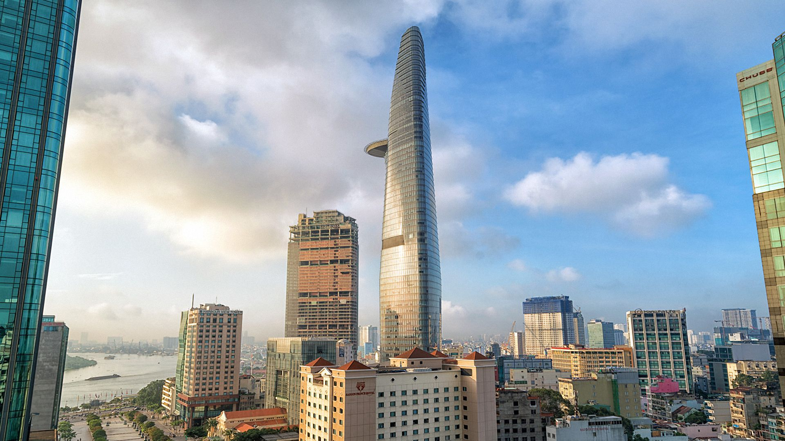
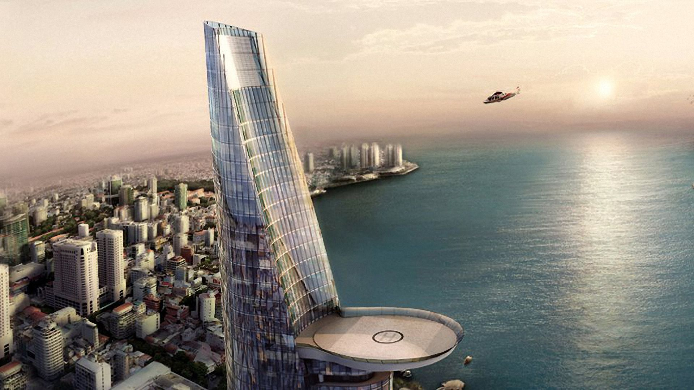
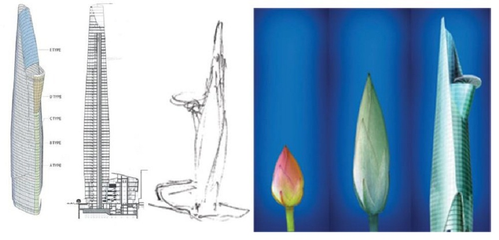

Địa chỉ: 19-25 Nguyễn Huệ, P. Bến Nghé, Quận 1, Tp. HCM.
Sau khi Landmark 81 khánh thành, tòa nhà Bitexco giữ vị trí thứ 2 trong bảng xếp hạng tòa nhà cao nhất Sài Gòn. Chiều cao tòa Bitexco là 262m với 3 tầng hầm và 68 tầng lầu được thiết kế bằng thép và kính đôi gia nhiệt, có hàm lượng sắt thấp. Đặc biệt có tầng 49 là đài quan sát Sài Gòn Skydeck và bãi đỗ trực thăng với chiều dài 40m, ở tầng thứ 52 của tòa tháp.
Được lấy cảm hứng từ hình ảnh búp sen – biểu tượng của người Việt Nam, kiến trúc sư Carlos Zapata lẫn tập đoàn Bitexco muốn gửi gắm thông điệp “ Văn hóa Việt Nam đang nở rộ và Việt Nam đang vươn cao trong quá trình Hội nhập”. Hình ảnh của búp sen vươn lên bầu trời, thể hiện cho khát vọng vươn lên của dân tộc, đại diện cho một Việt Nam đầy năng động nhưng vẫn gìn giữ bản sắc.

Bitexco trở thành biểu tượng cho sự phát triển nhanh chóng của Việt Nam hiện đại, hội nhập quốc tế và thế hệ trẻ năng động. Tác phẩm nghệ thuật kiến trúc duyên dáng này là điển hình chúng cho sự hợp lực hợp tác quốc tế.
Có thể nói, truyền thống văn hóa của người Việt đều được kiến trúc gia người Mỹ miêu tả một cách khéo léo nhất, tuyệt đẹp nhất, khiến cho bất cứ du khách quốc tế nào khi nhìn cũng nhận ra đó là hình ảnh đại diện của Việt Nam.
Đặc biệt nếu muốn nhìn trọn Sài Gòn một cách bao quát nhất để cảm nhận được sự nhộn nhịp và náo nhiệt nhịp sống nơi đây thì không nên bỏ qua tòa nhà Bitexco, ngắm nhìn toàn cảnh thành phố Hồ Chí Minh không góc chết từ giữa khu vực trung tâm từ trên cao với ống nhòm tầm xa.
Đài quan sát Sài Gòn Skydeck - Tòa nhà Bitexco
Thiết kế theo phong cách bất đối xứng sử dụng 6000 tấm kính, tất cả đều được đo đạc kỹ lưỡng làm sao cho hình dáng của tòa nhà thanh mảnh nhất, ngắm Sài Gòn sắc nét nhất.
Thiết kế tấm kính độc đáo - tòa nhà Bitexco
Những điều cần biết khi trải nghiệm tham quan Bitexco
1. Giá vé và giờ mở cửa tòa nhà
Giá vé lên tầng 49 để tham quan và nhìn Sài Gòn rộng lớn: 200.000VND/1 người/1 lượt
Giờ mở cửa: 10:00 – 21:30 (cuối tuần đóng cửa muộn hơn)
2. Cách thức di chuyển vào tòa nhà:
Bitexco được trang bị hệ thống thang máy 2 tầng, do hãng Otis của Mỹ sản xuất, lắp đặt và bảo trì. Có tổng cộng 12 thang máy 2 tầng bên trong tòa nhà, di chuyển với tốc độ 7m/giây, tương đương du khách chỉ mất 45 giây để di chuyển đến bất cứ nơi nào trong tòa nhà.